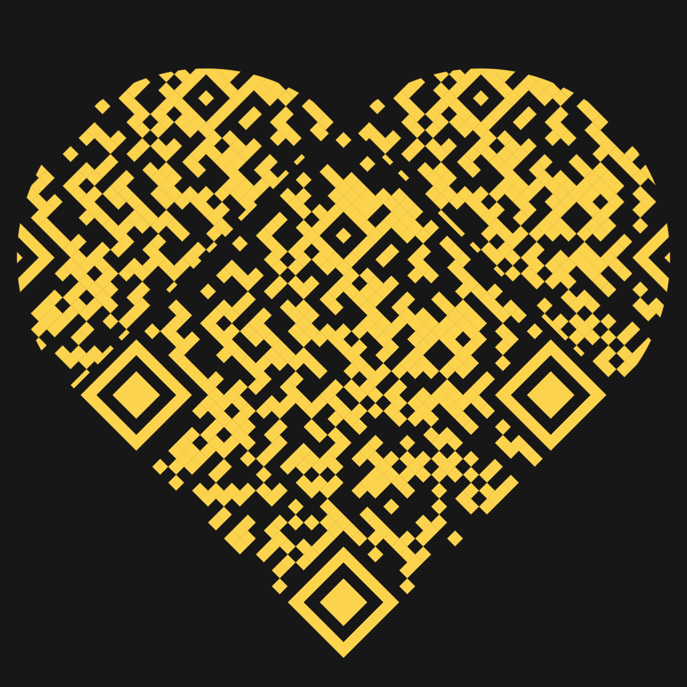

The Years That Changed Everything
2021 – 2023
By the time 2021 arrived, our lives were beginning to change.
You were growing up, moving through college, discovering your own dreams and ambitions. At the same time, Alhamdulillah, I started a new chapter of my life as I entered the professional world and began my career.
For the first time, life became truly busy.
The days that once seemed endless suddenly felt short. Responsibilities increased, schedules became difficult, and meeting each other became much less frequent than before.
It was during this time that I made one of the most difficult decisions of my life.
I told you to move on.
Even today, when I look back, I wish I could go back and sit beside that younger version of myself for just a moment.
Not because I wanted to change the past.
But because I wish I had understood my own heart a little better.
I did not tell you to move on because I stopped caring.
I told you to move on because I cared too much.
I worried about the future. I worried about the age difference between us. I worried that one day you might have to make sacrifices because of me.
Most of all, I worried that I might become the reason you missed opportunities that you deserved.
So I tried to do what I thought was right.
I tried to let you go.
But ALLAH had placed something special inside your heart.
You refused to give up on us.
You stayed when leaving would have been easier.
You believed when I was full of doubts.
And looking back now, I realize that your faith in us was stronger than my fears.
There were days when work left me completely exhausted. Days when all I wanted to do was go home, lie down, and sleep.
Yet somehow, whenever it was time to come and teach you, I always found the energy.
At the time, I told myself it was because I was being responsible.
Today, I know the truth.
It was because seeing you made even the hardest days feel lighter.
If I had to choose one of the most beautiful years of our journey, it would be 2022.
There are certain memories that remain vivid no matter how much time passes.
One of them is 21st February 2022.
I still remember seeing you in that black saree.
To anyone else, it may have looked like an ordinary day.
But to me, it became one of those memories that quietly stays in the heart forever.
I remember us riding together in a rickshaw.
I remember the conversations.
I remember the laughter.
I remember the simple happiness of being beside you.
That same year brought another special memory.
For the first time, we sat together in a restaurant.
Patil.
Looking back now, it was never really about the food or the place.
It was about us.
It was about watching our story slowly move forward.
Step by step.
Memory by memory.
Dream by dream.
Alhamdulillah, our relationship continued to grow in a beautiful way.
And while all of this was happening, you were also working hard toward your future.
You completed your HSC examinations and achieved an A+ result.
I was incredibly proud of you.
Not just because of the result itself, but because I knew how much effort and dedication stood behind it.
That year, I saw you becoming stronger, wiser, and more determined than ever before.
Then came 2023.
A year that changed everything.
You were preparing for university admission.
I was preparing for a journey that would take me thousands of kilometers away from home.
For both of us, it was a year filled with hope, uncertainty, and life-changing decisions.
Alhamdulillah, you earned admission to the University of Chittagong.
I still remember how happy and proud I felt when I heard the news.
Around the same time, Alhamdulillah, my Canadian visa was approved.
For the first time, it felt like both of us were watching our dreams slowly become reality.
But reality also came with sacrifices.
We had hoped to get married before I left.
Our families had begun discussing it.
We dreamed about beginning the next chapter of our lives together.
But ALLAH had written a different timeline for us.
The marriage did not happen then.
And so, with a heavy heart, I boarded a plane and left for Canada.
As I sat on that journey, I knew I was leaving behind my family, my friends, and everything familiar.
But what hurt the most was knowing that I was leaving you behind.
For the first time in years, there would be an ocean between us.
No more evening conversations in person.
No more rickshaw rides.
No more unexpected moments together.
Only memories.
Only hope.
Only dua.
Neither of us knew what challenges awaited us.
Neither of us knew how difficult the road ahead would become.
But one thing remained true.
No matter how far apart we were, our story was not over.
In many ways, it was only preparing us for the chapter that would test us the most.
The chapter that would prove just how strong our love really was.
Scan this to unlock the next chapter.
